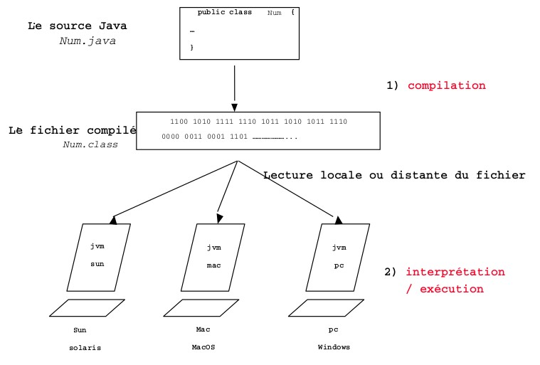

Java 1.0 a été publié en 1996.
En 2007, Sun publie le JDK en logiciel libre (open JDK) ; autres implémentations 100% libre.
Sun Microsystem (et donc java) devient la propriété d'Oracle en 2009.
Java a beaucoup évolué depuis 1996.
JDK Beta 1994 JDK 1.0 1996 212 classes JDK 1.1 1997 504 classes J2SE 1.2 1998 1500 classes J2SE 1.3 2000 1850 classes J2SE 1.4 2002 2723 classes J2SE 5.0 2004 3279 classes Java SE 6 2006 3793 classes Java SE 7 2011 4024 classes Java SE 8 2014 4240 classes Java SE 9 2017 6005 classes Java SE 10 2018 6002 classes Java SE 11 2018 4410 classes Java SE 17 2021 3130 classes (?)Les étapes importantes de cette évolution ont été java 2, java 5 et java 8.
Après la publication de java 9, Sun a annoncé une version majeure tous les 6 mois ; java 10 est la première version respectant ce cycle.
Les versions LTS (long term support) actuelles sont java 8, java 11 et java 17.
Plus de précisions sur le site d'Oracle.
Pour suivre les évolutions du langage depuis java 9 : https://docs.oracle.com/en/java/javase/15/language/java-language-changes.html
Acronymes utiles
- JVM - Java Virtual Machine : appareil informatique fictif qui exécute des programmes compilés sous forme de bytecode Java
- JDK - Java Development Kit : ensemble de bibliothèques logicielles de base ainsi que les outils avec lesquels le code Java peut être compilé, transformé en bytecode destiné à la machine virtuelle Java (JVM)
- JRE - Java Runtime Environment : ensembles d'outils déployés sur les postes clients, nécessaires pour éxecuter des programmes java.
- JSE (anciennement J2SE) - Java Standard Edition : version standard du JDK
- JEE (anciennement J2RE) - Java Entreprise Edition : version entreprise du JDK (= JSE + fonctionnalités)
- JME - Java Micro Edition : JDK pour mobiles
- JCP - Java Community Process
- JLS - Java Language Specification
- jar - java archive : format pour distribuer des exécutables java.
Design Goals of the Java Programming Language
(voir http://www.oracle.com/technetwork/java/intro-141325.html)It must be "simple, object-oriented, and familiar"
Syntaxe inspirée de C et C++, pas de pointeurs, facile à apprendre, langage purement objet (enfin presque...).It must be "robust and secure"
Langage compilé, ramasse miettes (garbage collector), fortement typé, gestion des exceptions, vérifications à la compilation et à l'exécution.It must be "architecture-neutral and portable"
It must execute with "high performance"
It must be "interpreted, threaded, and dynamic"
Liens incontournables
Java developer homepage : http://www.oracle.com/technetwork/java/index.htmlJava tutorials :
https://docs.oracle.com/javase/tutorial/tutorialLearningPaths.html
http://docs.oracle.com/javase
Et surtout la documentation de référence (API doc) : Depuis java 9, le JDK a été découpé en modules ; on utilisera surtout le module
java.base :
Deux autres sources importantes d'information :
-
https://github.com/openjdk/jdk : code source de l'implémentation openjdk de java.
(le code qui nous intéressera est dans https://github.com/openjdk/jdk/tree/master/src/java.base/share/classes/java) -
Java Language Specification (JLS) et Java Virtual Machine Specification, documents de référence lorsqu'on a besoin de documentation détaillée :
https://docs.oracle.com/javase/specs/.